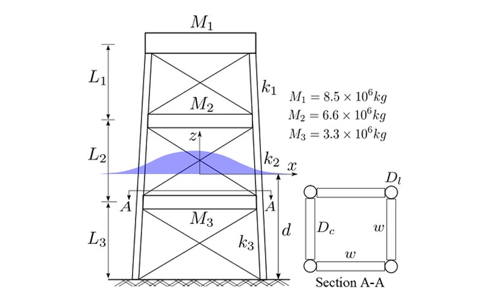
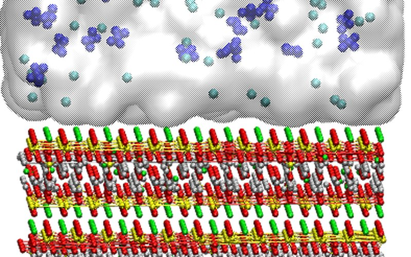
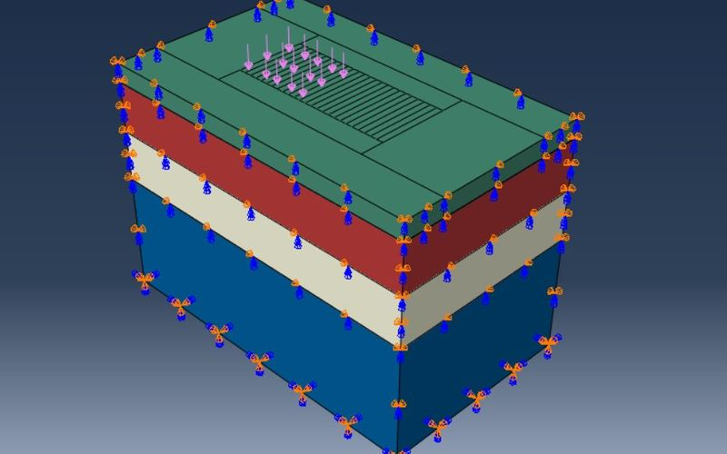
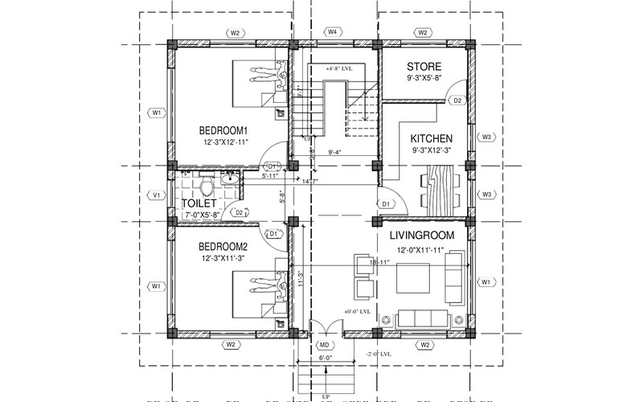

Projects
These are projects from my master's at LSU and my bachelor's in Nepal. Most of them were class projects. For the group projects, I've written what my part was.
Graduate (LSU)
-

Seismic design and pushover analysis of a 3-story RC moment frame
I designed a three-story concrete building with special moment frames in ETABS, then ran a pushover analysis in OpenSees to see how it behaves past the design loads.
-

Horizontal shear design of composite prestressed beams
A report on shear transfer between a precast prestressed girder and its cast-in-place topping, with a worked design to ACI 318-19.
-

Dynamic analysis of an offshore platform under wind and wave loading
I wrote MATLAB code to generate random wind and wave loads on a jacket platform and solve its dynamic response.
-

Sulfate ion transport in C-S-H nanopores
A molecular dynamics project on calcium leaching from C-S-H in contact with a sulfate solution, at different temperatures and Ca/Si ratios.
-

Bridge scour monitoring and inspection review
A literature review of how bridge scour is monitored, with a focus on piezoelectric sensors.
Undergraduate (Tribhuvan University, Nepal)
-

Pavement response to overloaded trucks
A group project in Nepal on pavement damage from overloaded trucks. My part was the Abaqus model and the analyses.
-

Bridge approach survey, road and drainage design
Survey camp project: Total Station survey, a 1:500 topographic map, and road and drainage design for a bridge approach.
-

Residential building drawing set and cost estimate
Drawings and a detailed cost estimate for a one-story house, once as an RC frame and once with load-bearing brick walls, plus a road estimate.